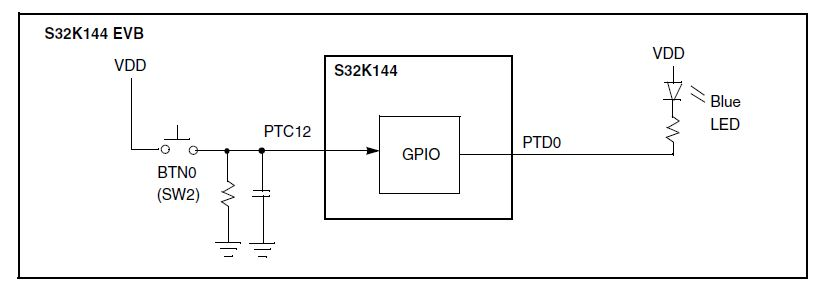

Description
This short project is a starting point to learn GPIO.
An input is polled to detect a high or low level.
An output is set depending on input state.
If running code on the S32K1xx evaluation board, pressing button 0 lights up the blue LED.

Design
- Initialization before main:
- Define interrupt addresses (such as Reset_Handler) and flash configuration
- Initialize stack pointer, registers
- Disable watchdog if configured
- Initialize vector table
- Copy variables from ROM to RAM and zero out data section (.bss)
- Unmask interrupts
- Disable watchdog
- Enable clocks to GPIO modules and configure GPIO ports:
- GPIO input (goes to BTN0 on evaluation board)
- GPIO output (goes to blue LED)
Loop:
- If BTN0 is pressed (input = 1),
- Turn LED on (output = 0)
- else (input = 0)
- Turn LED off (output = 1)
Pins definitions:
| Function | S32K116 | S32K118 | S32K142 | S32K144 | S32K146 | S32K148 | S32K144W |
| GPIO [BLUE LED] | PTE8 | PTE8 | PTD0 | PTD0 | PTD0 | PTE23 | PTE3 |
| GPIO [SW2] | PTD3 | PTD3 | PTC12 | PTC12 | PTC12 | PTC12 | PTD3 |
main.c
#include "device_registers.h"
#define PTD0 0
#define PTC12 12
{
WDOG->CNT=0xD928C520;
WDOG->TOVAL=0x0000FFFF;
WDOG->CS = 0x00002100;
}
{
int counter = 0;
PCC-> PCCn[PCC_PORTC_INDEX] = PCC_PCCn_CGC_MASK;
PCC-> PCCn[PCC_PORTD_INDEX] = PCC_PCCn_CGC_MASK;
PTC->PDDR &= ~(1<<
PTC12);
PORTC->PCR[12] = PORT_PCR_MUX(1)
|PORT_PCR_PFE_MASK;
PORTD->PCR[0] = PORT_PCR_MUX(1);
for(;;)
{
if (PTC->PDIR & (1<<
PTC12)) {
}
else {
}
counter++;
}
}
 1.8.17
1.8.17